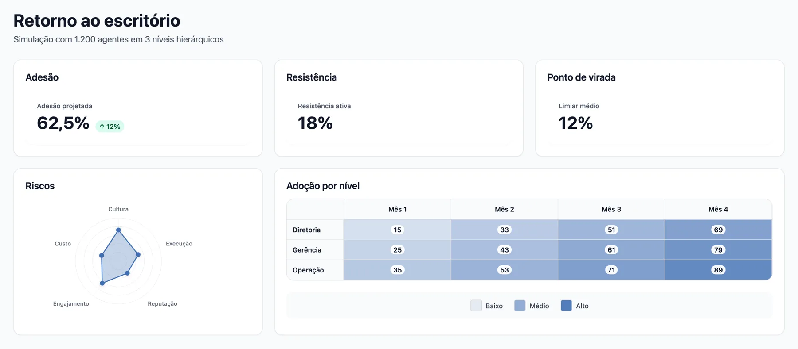
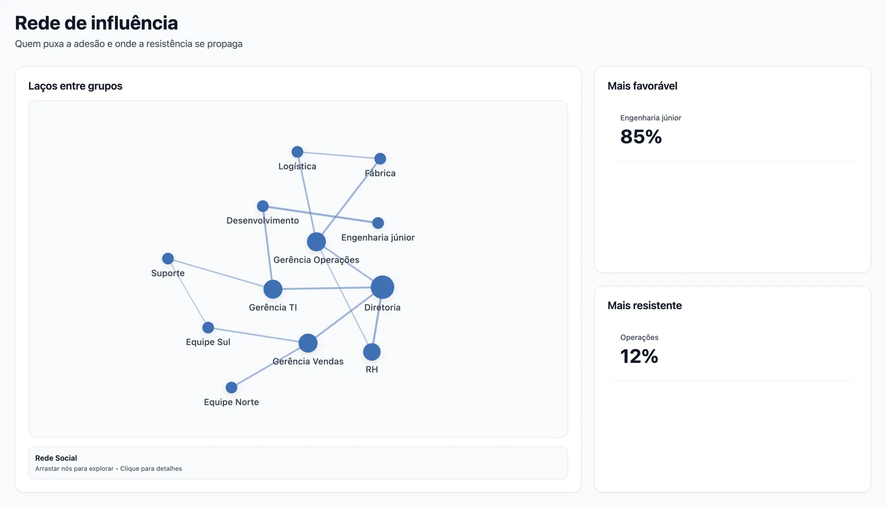

Transformamos dados humanos em sociedades sintéticas para testar decisões antes da execução.
Um laboratório de simulação e inferência comportamental.
Bem-vindo à era da simulação comportamental.
O Granovetter transforma dados culturais, humanos e contextuais em sociedades organizacionais sintéticas — povoadas pelos nossos agentes sintéticos — criadas para testar como grupos reais reagem a decisões, crises, mudanças e tensões estratégicas.
Não simulamos indivíduos isolados. Simulamos sistemas humanos em interação.
Toda decisão desencadeia reações em um sistema humano antes de virar resultado.
Entre a intenção e a execução há pessoas. Há comportamento. O Granovetter simula esses comportamentos para antecipar resultados, mostrando quais cenários têm maior chance de gerar o melhor retorno e quais riscos podem comprometer tempo, dinheiro e confiança.
Simule cenários críticos antes que uma decisão custe caro demais.
O Granovetter reduz o custo de decidir errado.
Criamos o grano.protocol, um método de simulação comportamental baseado em inteligência artificial e ciência aplicada para transformar decisões estratégicas em cenários testáveis. Simular comportamento é apenas o meio. O fim é mostrar quais caminhos geram o melhor resultado antes que a decisão consuma tempo, dinheiro e confiança.
Risco de decisão
Qual caminho tende a funcionar melhor antes de implementar.
Risco de adesão
Quem tende a comprar, resistir, distorcer ou ignorar a decisão.
Risco de execução
O que pode comprometer produtividade, foco, colaboração e velocidade.
Risco cultural
Se a decisão reforça ou enfraquece confiança, clima, pertencimento e abertura à mudança.
Risco reputacional
Ruídos, cinismo, narrativas paralelas e desgaste da liderança.
Comportamento humano não é aleatório. É complexo, mas inferível.
Humanos seguem padrões. Grupos convergem, resistem, imitam, polarizam e se reorganizam. Em uma organização, o comportamento coletivo não é a soma de opiniões individuais. É uma dinâmica emergente, moldada por cultura, contexto, ambição, confiança, medo e pressão social.
É por isso que empresas podem ser simuladas: para antecipar padrões, tensões e riscos antes de chegarem à execução.
Sobreposição média entre simulação sintética e pesquisa tradicional.
Comparações diretas validando a precisão da inferência sintética.


AI Behavioral Science.
A convergência entre ciência comportamental, sistemas complexos e inteligência artificial generativa.
Por décadas, a ciência mostrou que o comportamento humano não é aleatório. Pessoas interpretam riscos, respondem a incentivos, resistem a perdas, imitam grupos e mudam de posição sob pressão social.
A descoberta recente é que modelos generativos fazem algo maior do que linguagem: reproduzem padrões de comportamento social em ambientes sintéticos, interagindo, adaptando e influenciando uns aos outros.
Quando ciência comportamental, agentes generativos e simulação se encontram, decisões deixam de ser apenas imaginadas. Passam a ser testadas.
O nome é uma homenagem a Mark Granovetter, sociólogo de Stanford. Em Threshold Models of Collective Behavior (1978), mostrou que cada pessoa tem um limiar: quantos outros precisam aderir antes que ela adira. Em The Strength of Weak Ties (1973), que inovações viajam melhor por laços fracos. Limiares, pressão social, cascatas e pontos de virada são o que o Granovetter simula.
Me chamo Dheiver Santos, PhD.
Sou fundador do Granovetter. Engenheiro de machine learning e pesquisador de IA, doutor em Engenharia Química com ênfase em Inteligência Artificial (UFBA/UFRJ), com pós-doutorado na UNICAMP/UNIT (CNPq) e na UFAL (FUNDEPES). Atuei como Senior Staff Machine Learning Engineer na SX Negócios, Cientista Sênior no Grupo Boticário e professor de IA na UPE e na Estácio.
Criei o Mangaba.AI, framework open-source para equipes de agentes autônomos de IA, e fundei a Cognai, healthtech que aplica IA à cardiologia. Mais de 200 artigos, 550+ citações, h-index 12, uma patente no INPI e 10 produtos de IA entregues em fluxos clínicos e operacionais reais.
O grano.protocol transforma decisões estratégicas em simulações comportamentais.
Cada simulação começa com a construção de agentes sintéticos baseados em perfis reais da organização: cultura, contexto, demografia, território, histórico e tendências comportamentais. Depois, esses agentes são expostos a cenários críticos, decisões e variáveis estratégicas. Primeiro respondem individualmente. Depois interagem com o coletivo, ajustando posições, resistindo, aderindo ou amplificando narrativas.
O resultado não é uma previsão única. É uma distribuição de cenários, riscos e probabilidades para apoiar decisões antes da execução.
Agentes sintéticos
Perfis representativos baseados em grupos reais da organização.
Ambiente organizacional
Cultura, contexto externo, liderança, pressão social e momento da empresa.
Projeção individual
Cada agente reage ao cenário antes de conhecer o grupo.
Interação coletiva
Os agentes confrontam respostas, narrativas e pressões sociais.
Síntese probabilística
O sistema revela cenários prováveis, riscos emergentes e caminhos de decisão.
O Granovetter recebe dados reais da organização, transforma decisões estratégicas em cenários simuláveis e entrega inferências comportamentais para apoiar a decisão antes da execução.
Entrada
Dados culturais, perfis de grupos, contexto organizacional, ambiente externo e decisão a ser testada.
Simulação
Agentes sintéticos interagem com cenários, pressões, narrativas e variáveis estratégicas.
Saída
Cenários prováveis, riscos emergentes, tensões ocultas, padrões de adesão, resistência e recomendações para decisão.
Intervenção
Ações testadas antes de agir: comunicação, incentivos e ritmo da mudança são simulados de novo para ver qual reduz a resistência.
O motor é open source.
Na rodada 1, cada agente sintético reage sozinho. A partir da rodada 2, é exposto ao consenso e às posições contrárias do grupo. A análise mede adoção, resistência, conformismo e ansiedade, e localiza o ponto de virada.
Exemplo do repositório, com organização fictícia: 350 pessoas indo para trabalho 100% remoto. Adoção prevista de 62,5%: engenharia júnior em 85%, operações em 12%. Cenário mais provável: adoção lenta com atrito (52%).
Simulação não é previsão: é apoio à decisão, a validar com dados reais da organização. Ver o código no GitHub →
Uma ferramenta para decidir melhor.
Somos uma pequena equipe trabalhando na vanguarda da simulação multiagente, modelagem comportamental e IA aplicada para resolver o maior problema da gestão de empresas: a falta de previsibilidade.
Qual futuro você quer simular?
Simule você mesmo.
O motor de simulação do Granovetter é aberto. Rode os cenários de exemplo, adapte ao perfil da sua organização e acompanhe o desenvolvimento.